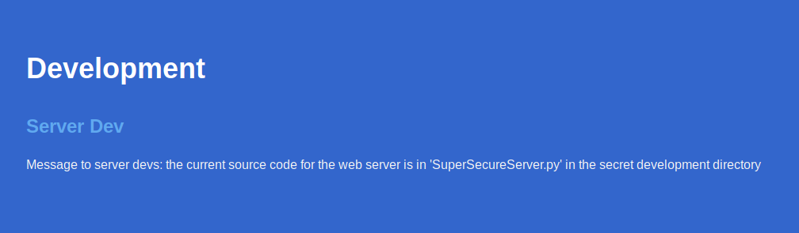

Obscurity
I've done this box before so i mostly will be going over the steps i took to own it. As usual i satred with a scan using "nmap -sV -sC -oN nmap 10.10.10.168"
Seeing that port 8080 has a HTTP Server running on it i took a look at the website and found an interesting note for the server developers on it.

I initially tried running gobuster to find the secret development directory with no results because just going to the directory returns a 404 error. Later i realized that since i know the name of the file that im looking for i decided to try using wfuzz to find it. This time while i was trying to replicate that to get a screenshot of it didnt initially manage to find it so i had to do some troubleshooting there. I remembered that the directory i was looking for was called "develop" so i checked my wordlist to make sure that word was in there and it was but wfuzz still didnt manage to actually find it so i even tried to make go through burp with "-p 127.0.0.1:8081" as seen in the next image. I modified a request wfuzz was making to have the directory name that i know im looking for to make sure it recognizes when it gets a 200 OK response and it did. I was confused about why it didnt find it but a moment after troubleshooting it with burp it magically started working and found the "develop" directory.

Looking at the source code i found the vulnerable exec function that formats the info variable with the path in the url

To figure out how to get remote code execution out of this i copied a few lines from the source code into python as shown in the next image. All i had to do is put a payload into the path variable and running the exec function to see what it does and how it reacts. After playing around with it i figured out i had to close the previous single quote then add a semi-colon to start a new statement with my payload and end it with a "#" to comment out the rest of the code on that line.
Now to actually exploit this i intercepted a request to the page using burp to easily add and save the payload. I went to pentestmonkey.net to grab a reverse shell (link below). Since i am able to execute python on the server i chose the python reverse shell and added it to burp without the "python -c" part. Also only now i realized i didnt need to import socket, subprocess and os either since it is already imported in the code. After setting up a listener and URL encoding the whole payload i sent it and got a shell back.

After getting the initial shell i used python to spawn a proper shell for me to work on.
Navigating to the only home directory (robert) i found some interesting files.

First obvious file is the user.txt that contains the user flag. Looking the contents of the check.txt i see it contains this: "Encrypting this file with your key should result in out.txt, make sure your key is correct!". Looking at the out.txt and passwordreminder.txt i saw that they were obviously encrypted so it was safe to assume that the user had encrypted these files using his SuperSecureCrypt.py with his key.